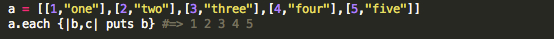
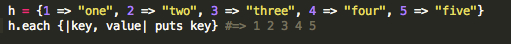
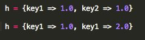
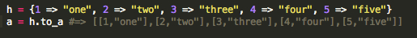
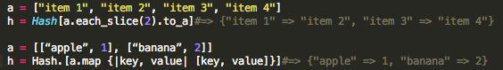

The following definitions are pulled from ruby-doc.org:
Array: Arrays are ordered, integer-indexed collections of any object. Array indexing starts at 0. A negative index is assumed to be relative to the end of the array---that is, an index of -1 indicates the last element of the array, -2 is the next to last element in the array, and so on.
Hash: A Hash is a dictionary-like collection of unique keys and their values. Also called associative arrays, they are similar to Arrays, but where an Array uses integers as its index, a Hash allows you to use any object type. Hashes enumerate their values in the order that the corresponding keys were inserted.
The .each method allows you to iterate through and array or hash with ease. The difference is in the syntax of the proper iteration. Below is an example of using the .each method to iterate through an array, using a two dimensional array.
The .each method for a hash requires you to include both the key and value syntactically as seen below:
As you can see, they are pretty much the exact same notation. This important to know because it affects how you view their indexing.
In hashes, keys and values are locked to one another. While several keys can have the same value, within one hash, there can only be one name for a particular key connected to its value.
While the values are the same in the first example, the key names are different. In the second example the values are different, but the key names are the same, which is impossible!
In arrays, the index of a value is relative and doesn't matter nearly as much as the key matters in a hash.
For example: you can delete the number index at 2, causing the whole array to shift over. You can do this because you don't care where the value is indexed, because the index is relative to your operations on the array.
For a hash, you can't simply delete the value without deleting the corresponding key. The whole entry must be deleted.
You can convert a hash to an array using the .to_a method. It will provide you a two dimensional array in which the key is listed before the value in their own array.
Converting an array to hash is slightly more complicated. Here are two examples of creating a hash from a one-dimensional array and a two dimensional array.
If you need a simple collection of values that are not connected to any particular thing, besides their grouping, an array will suffice. A good example are the grades on a test for an entire class. You just want to hold a collection of the grades and do not care in what order they are in or how they are indexed.
Now, if you have a collection of values that are all related and should connect to some specific identifier, then you should use a hash. For example, you want to hold a collection of the grades from that test and the student who scored that grade. This is a great use of a hash, utilizing the student name as a key and the grade as the value. This way, you can still do all operations you would need on the array, but you can also find out scores based on the student's name using a simple .include? method on the hash. You could have linked the student name and test score using a two dimensional array, however, you would have to create two loops to index through the array on the level of student name, rather than once when using a hash.
Technically speaking, anything you can do with a hash, you can do with a two dimensional array, but it makes your job significantly harder! Use arrays when you need to group values based on a single commonality and use hashes when you need to group values based on a single commonality and individual identifier.